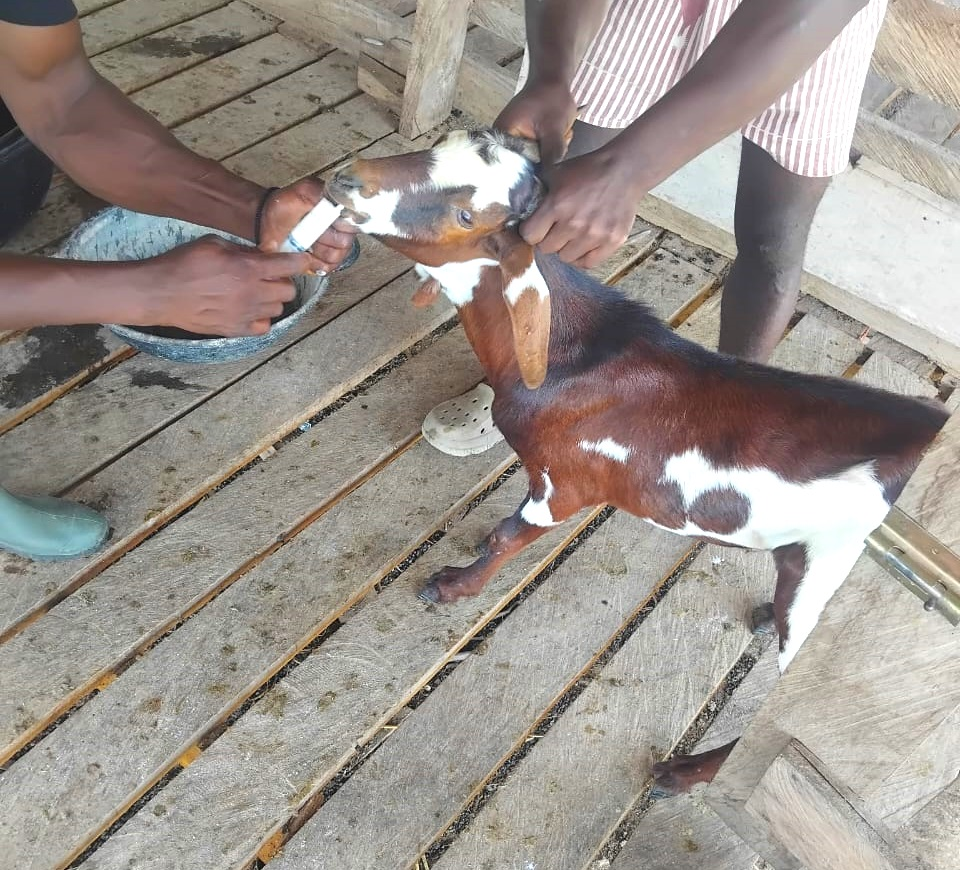
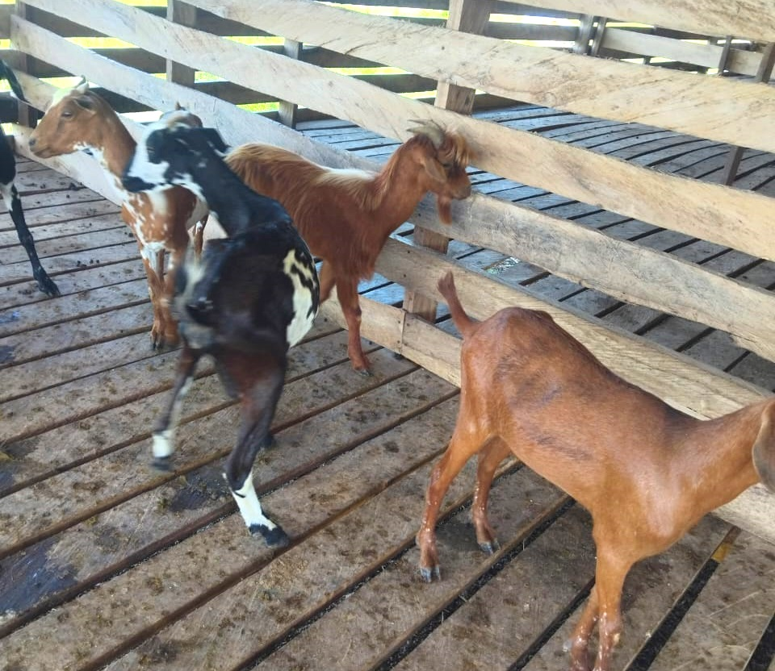
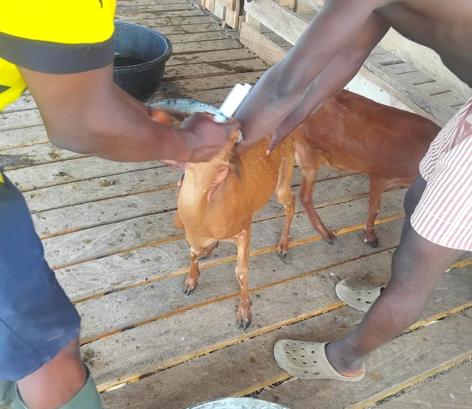
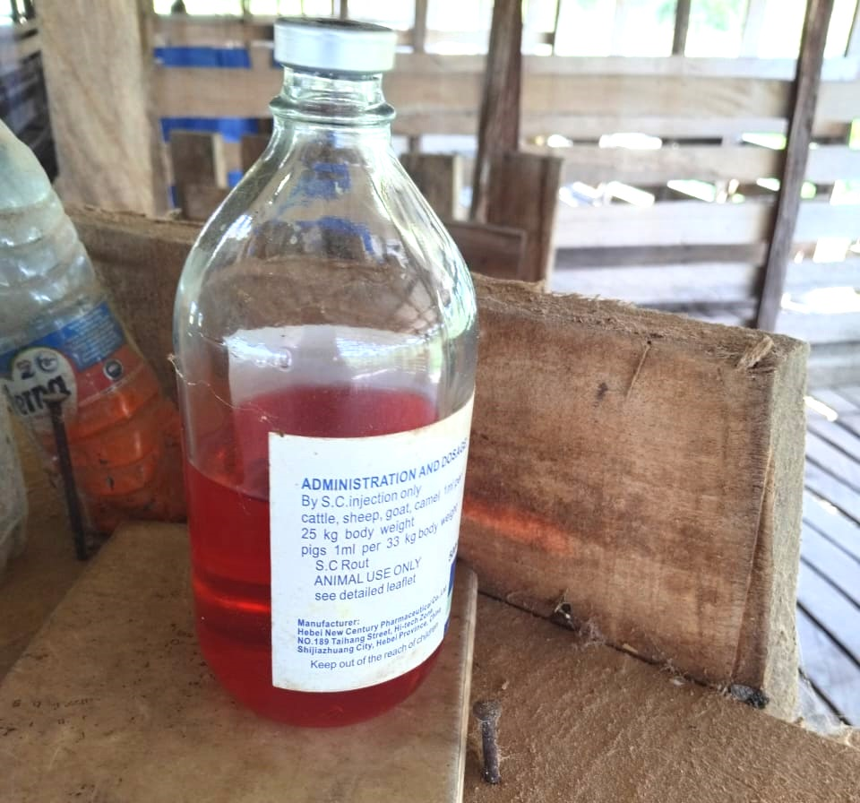

Clear Identification
Each animal receives a unique non-reusable ear tag ID (e.g. EV-GT-000001 for goats) that remains permanent throughout its life and links to its veterinary and pedigree profile.
A disciplined approach to standardizing goat agricultural routines, digitizing animal health records, and maintaining rigorous biosecurity across every herd asset.



Our management system provides each animal with an unbroken record across its complete lifecycle—from pedigree identification and breeding history to veterinary oversight and nutritional feed conversion.
The farm-data framework connects identity, life events, health status, and pen location over time.
Each animal receives a unique non-reusable ear tag ID (e.g. EV-GT-000001 for goats) that remains permanent throughout its life and links to its veterinary and pedigree profile.
Logs capture acquisition source, sire and dam lineage, estrus cycles, ultrasound pregnancy checks, birth weight, growth milestones, and pasture pen transfers.
Immediate entry of symptoms, clinical assessments, drug administration, withdrawal periods, booster schedules, and licensed veterinarian certifications.
Authentic, verified photography from our active goat farm facilities showcasing daily husbandry routines and infrastructure.
Elevated flooring ensures rapid manure drainage, eliminates standing moisture, and minimizes parasitic exposure for thriving herds.

Cohorts are grouped by growth stage to ensure equal access to balanced rations, mineral licks, and automated clean watering.
Direct oral administration of essential vitamins, electrolytes, and deworming treatments with verifiable individual dose tracking.

Hands-on daily physical inspection for coat condition, eye mucosa vitality, body score conditioning, and feed intake response.

Strict medication logging, manufacturer batch verification, temperature-monitored storage, and strict withdrawal compliance.
The operating roadmap tracks feed types, approved suppliers, batch purchases, daily rations, stock balances, and automated reorder points. This data enables precise feed conversion ratio (FCR) tracking and predictable cost management.
Feeding, watering, housing, breeding, preventive health, procurement, and biosecurity all operate with clear owners and standardized routines.
Examine every task and document clear, repeatable SOPs.
Equip managers and verify daily records for accuracy and compliance.
We share farm protocols and inventory capabilities with commercial off-takers and food businesses.